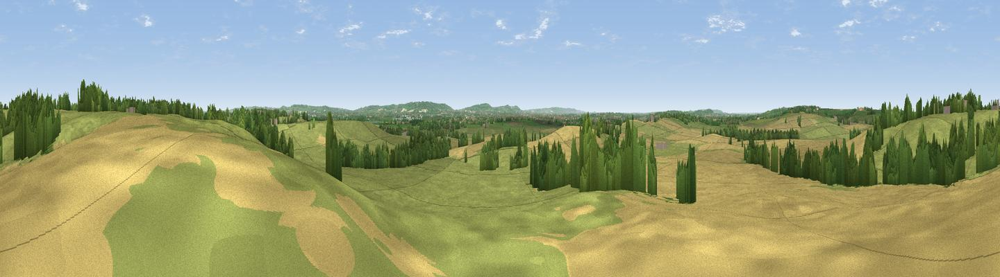

Viewpoint near Aston Abbotts
#24460 in England · top 31% of its area beats it · near Aston AbbottsWhere it is
The exact computed spot (SP 83925 19425). Click the marker for map links.
The view, rendered

A 360° render of this exact spot computed from the terrain model, tree cover and land cover — summer colours, afternoon light, calibrated against photographs of famous viewpoints. Real trees, hedges and buildings will differ in detail.
The panorama
Grey silhouette: terrain skyline in each direction (720 bearings, Earth curvature and refraction included). Dashed green: skyline with trees (+15 m) and buildings (+8 m) as obstacles. Blue strip: how far the ground is visible on each bearing.
Where the view opens
Wedge length = distance to the farthest visible ground on that bearing (vegetation-aware). Rings at 10, 25 and 50 km.
What fills the view
61% grassland · 30% cropland · 8% woodland ·
Angular shares of the visible panorama (visual magnitude), not map area. Landscape diversity 0.40 (0–1 Shannon).
Key numbers
More beautiful places nearby
The staircase of upgrades: each row has a higher view potential than everything closer. Driving times are estimates from straight-line distance, calibrated against real road routing — check an actual route before setting out.
| Place | Direction | Drive | Score |
|---|---|---|---|
| Viewpoint near Quainton | W · 8 km | ~16 min | 50.8 |
| Viewpoint near Quainton | WNW · 8 km | ~17 min | 56.5 |
| Viewpoint near Upper Winchendon | WSW · 9 km | ~18 min | 58.0 |
| Quainton Hill | WNW · 9 km | ~18 min | 61.2 |
| Viewpoint near Quainton | WNW · 9 km | ~18 min | 64.9 |
| Viewpoint near Halton | SSE · 10 km | ~20 min | 74.3 |
| Coombe Hill Monument | S · 13 km | ~23 min | 75.5 |
| Viewpoint near Woolstone | WSW · 63 km | ~86 min | 76.7 |
51.86710, -0.78253 · source: screening · position refined by local search. Computed location — check access rights before visiting.